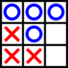

6. hét: pointerek, sztringek, állapotgépek
Czirkos Zoltán, Nagy Gergely, Pohl László · 2015.02.18
Gyakorlófeladatok a 6. előadás anyagához kapcsolódóan.
Ezen az oldalon rengeteg feladat található a gyakorláshoz. Egy részük megoldással együtt, míg a többi anélkül. A gyakorlófeladatok megoldásához elvileg elegendő az az ismeretanyag, amely az előadáson szerepelt. Természetesen a megoldás kitalálásához szükség lehet arra a rálátásra és tapasztalatra, amit a gyakorlatok és a laborok adnak. A feladatok témakörök szerinti csoportosítása viszont ettől függetlenül az előadást követi.
Felhívjuk a figyelmed arra, hogy a megoldások olvasgatása lényegében nulla tapasztalatot és gyakorlatot ad, így az eredményes számonkérésekhez nem tud hozzásegíteni! A megoldásokat akkor nézd csak meg, ha a saját megoldás elkészítése közben elakadsz. Lásd itt.
1Tömbök és függvények
Tömb eleme
Írj függvényt, amely átvesz egy int tömböt, és visszatér a 4 indexű elemével,
ha az létezik, különben 0-val!
Megoldás
A C-ben, ha egy tömböt átadunk paraméterként, akkor csak az első
elemének (nullás indexű elemének) a címe adódik át a függvénynek.
Ebből az is következik, hogy a függvény nem tudja, mekkora az a
tömb, vagyis azt is át kell adni, külön paraméterként. A függvény
paramétereinek típusa ezért int*, a tömb elejére mutató
pointer, és még egy int, amelyik pedig a tömb mérete.
Hogy létezik-e a tömb 4-es indexű eleme, azt pedig ebből a méret
változóból tudjuk.
int fv(int *t, int meret) {
if (meret>4)
return t[4];
else
return 0;
}
Tömb összege
Készíts függvényt, mely egy valós számokból álló tömb elemeit összegzi!
Tömb három legkisebb eleme
Készíts függvényt, amely egy tömb 3 legkisebb elemét határozza meg!
Alig változik
Készíts függvényt, mely a paraméterben kapott egész tömbről megvizsgálja, hogy elemeinek értéke szomszédos elemek E sugaron belül helyezkednek el (különbségük nem nagyobb, mint E vagy -E) A függvény bemenő paramétere a tömbre mutató pointer, a tömb elemeinek száma, valamint az E értéke. Visszatérési értéke logikai típusú legyen, amely azt mutatja, teljesült-e a feltétel!
Legalább kettő
Írj függvényt, amely paraméterként vesz át egy egészekből álló tömböt, és visszaadja az első olyan tömbelem címét, amelyből legalább kettő található a tömbben! Ha nincs ilyen tömbelem, adjon vissza NULL pointert!
Megoldás
int *dupla(int *tomb, int n) {
int i, j;
for (i=0; i<n-1; i++)
for (j=i+1; j<n; j++)
if (tomb[i] == tomb[j])
return tomb+i;
return NULL;
}
Rendezett-e
Írj függvényt, amely paraméterként vesz át egy valós értékekből álló tömböt, melyről biztosan tudjuk, hogy elemei különbözőek! A függvény ellenőrizze, hogy a tömb rendezett-e (akár növekvő, akár csökkenő sorrendben; a feltételezett rendezettség iránya az első két tömbelem vizsgálatával eldönthető). Ha a tömb nem rendezett, a függvény adja vissza az első olyan tömbelem címét, amelyik elrontja a rendezettséget! Ha a tömb rendezett, adjon vissza NULL pointert! Pl. be: {-8.11, -5.3, 0.1, 2.5, 1.4, 6.9, 12.0, 5.7}, a visszaadott érték az 1.4-et tartalmazó tömbelem címe. Pl. be: {7, 1, 2, 3, 4, 5}, a visszaadott érték a 2-t tartalmazó tömbelem címe.
Megoldás
double *rendezette(double *tomb, int n) {
int i, no;
if (n<3) return NULL;
no = tomb[0] < tomb[1];
for (i=3; i<n; i++) {
if (no && tomb[i-1] > tomb[i]) return tomb+i;
else if (!no && tomb[i-1] < tomb[i]) return tomb+i;
}
return NULL;
}
Legkisebb és legnagyobb
Írj függvényt, amely paraméterként vesz át egy egészekből álló tömböt! A függvény adja vissza címével átvett változókban a tömb legkisebb és legnagyobb elemének indexét! Ha több egyforma érték a legkisebb/legnagyobb, akkor ezek közül bármelyik indexét visszaadhatja.
Megoldás
void minmax(int *tomb, int n, int *min, int *max) {
int i;
*min = *max = 0;
for (i = 1; i<n; i++) {
if (tomb[i] < tomb[*min] ) *min = i;
if (tomb[i] > tomb[*max] ) *max = i;
}
}
24×21-es képecskék
Egy játékhoz, amit írunk, szükség vagy 24×21 fekete/fehér pontból álló kis képecskékre. Mivel ezekből rengeteg lesz, kitaláljuk, hogy a fekete/fehér jelleg miatt egy bit is tárolhat egy pontot, így az egy kép által lefoglalt memória (innentől feltételezve a 8 bites char-t) 3×21=63 bájtot foglal csak el a memóriából. Feladat: írni három függvényt, amelyek a következőeket tudják:
- Kirajzolni pontokból és csillagokból egy ilyen képecskét.
- Fehérre állítani egy pontot.
- Feketére állítani egy pontot.
Megoldás
#include <stdio.h>
typedef unsigned char kep[63];
// Az elso feladatresz megoldasa: egy kepecske kirajzolasa
void kirajzol(kep k) {
int x, y;
for (y=0; y<21; y++) {
for (x=0; x<24; x++) {
/* annyival shift, utana legalso bit */
/* (szóköz helyett .-ot használtam most) */
printf("%c", (k[y*3+x/8]>>(7-x%8))&1 ? '*':'.');
}
printf("\n");
}
printf("---\n");
}
// A masodik feladatresz: adott pontot feherre allit
void feher(kep k, int x, int y) {
/* keppont aktiv: bitenkenti VAGY */
k[y*3+x/8]=k[y*3+x/8] | (1<<(7-x%8));
}
// A harmadik feladatresz: adott pontot feketere allit
void fekete(kep k, int x, int y) {
/* keppont ki: bitenkenti ES a negalttal */
k[y*3+x/8]=k[y*3+x/8] & ~(1<<(7-x%8));
}
int main(void) {
int x, y;
kep k;
for (y=0; y<21; y++)
for (x=0; x<24; x++)
fekete(k, x, y);
kirajzol(k);
for (x=0; x<24; x++)
feher(k, x, 10);
kirajzol(k);
for (y=0; y<21; y++)
feher(k, 5, y);
kirajzol(k);
return 0;
}
Megoldható kétdimenziós tömbbel is, kep[3][21]. Az egy bájton belüli képpond
sorrend is tetszőleges; vagy mindenhol 7-x%8, vagy mindenhol simán x%8.
Minden második
Írj függvényt, ami egy tömböt átvesz paraméterként, és hátulról indulva kiírja minden második elemét! Ügyelj arra, hogy nehogy túl/alulindexeld a tömböt!
Súlypont
Készíts struktúratípust, amely alkalmas egy térbeli pont koordinátáinak eltárolására (x, y, z koordinálta). Írj függvényt, amely átvesz egy térbeli pontokból álló tömböt, és visszaadja a pontok súlypontját (azaz azt a pontot, amelynek a koordiátáit a bemenő bontok megfelelő koordinátáinak átlagai)! Próbáld ki a függvényt teljes programmá kiegészítve!
Hány egyedi elem van?
Készíts függvényt, mely egy adott tömbben megszámolja, hogy hány olyan elem van, amely csak egyszer fordul elő! Pl. a { 2, 7, 5, 8, 9, 5, 7, 5, 5, 3 } tömbre a visszatérési érték legyen 4, mert a { 2, 3, 8, 9 } számok mind csak egyszer szerepeltek!
A leggyakoribb elem
Készíts függvényt, mely meghatározza egy adott (véletlen számokkal feltöltött) tömbben, hogy melyik értékből található benne a legtöbb! Pl. ha a tömb elemei { 2, 7, 5, 8, 9, 5, 7, 5, 5, 3 }, akkor a függvényt visszatérési értéke legyen 5, mivel az a leggyakoribb elem.
Rendezettség vizsgálata
Írj egy függvényt, amelyik egy double számokból álló tömböt vesz át paraméterként. A
függvény térjen vissza egy felsorolt típussal, amelynek lehetséges értékei: csokkeno
, ha a tömbben lévő számsorozat szigorúan monoton csökken; novekvo, ha szigorúan
monoton nő; osszevissza, ha egyik sem igaz rá. Írj egy programrészt, amelyik
definiál egy tömböt, és kiírja, hogy „növekvő”, ha a tömbben lévő számok szigmon növekvő sorban
vannak. Pl. [3 2.1 0.9] → csokkeno, [3 4 2 9 5] → osszevissza, [3 4.65
9 11] → novekvo.
Megoldás
#include <stdio.h>
/* nem lenne muszaj typedefelni amugy */
typedef enum { osszevissza, novekvo, csokkeno } SzigMon;
/* a feladat nem definialja azt, mi a helyzet a 0 es 1 elemu
tombokre (amik szigmon novekvoek es csokkenoek is :D) */
SzigMon vizsgal(double t[], int meret) {
int i;
int nov=1, csokk=1; /* egyelore barmelyik lehet */
/* vigyazni a tulindexelesre! i+1, szoval itt i<meret-1*/
for (i=0; i<meret-1; i++)
/* ha nem igaz, hogy kisebb a kovetkezonel */
if (!(t[i]<t[i+1]))
/* akkor ez novekvo nem lehet */
nov=0;
/* ugyanaz a logika */
for (i=0; i<meret-1; i++)
if (!(t[i]>t[i+1]))
csokk=0;
/* hacsak nem 0 vagy 1 elemu a tomb, akkor ez megfelel */
if (csokk) return csokkeno;
if (nov) return novekvo;
return osszevissza;
}
int main(void) {
double t1[5]={5, 9, 1, 3, 45};
double t2[5]={1, 2, 3, 4, 5};
double t3[5]={9, 8, 7, 6, 5};
if (vizsgal(t1, 5)==osszevissza) printf("t1 osszevissza\n");
if (vizsgal(t2, 5)==novekvo) printf("t2 novekvo\n");
if (vizsgal(t3, 5)==csokkeno) printf("t3 csokkeno\n");
return 0;
}
Minden szám megfordítása
Írj C programot, amelyik definiál egy 1000 elemű, bájtokból álló tömböt. A program fordítsa meg az egyes bájtokban a biteket; a 7. helyiértékű cseréljen helyet a 0. helyiértékűvel, a 6. helyiértékű az 1-essel stb. (Feltételezzük, hogy a bájtok 8 bitesek. A tömb számokkal feltöltésével nem kell foglalkozni.) A program végezetül írja ki binárisan a tömb 0. elemét. A megfordításra példa:
76543210 10110010 bemenet 01001101 kimenet
Megoldás
#include <stdio.h>
int main(void) {
unsigned char t[1000];
int i;
/* egyet most itt inicializalok, hogy lassam az eredmenyt,
* de a feladat nem keri */
t[0]=0xd7;
/* kiiras, csak hogy a csere elott is lassuk */
for (i=7; i>=0; i--)
putchar((t[0]>>i)&1 ? '1':'0');
printf("\n");
/* ez a MEGOLDAS LENYEGE */
for (i=0; i<1000; i++) {
int j;
unsigned char uj=0;
/* amit a regi szambol kishiftelunk jobbRA,
* azt az ujba beshifteljuk jobbROL */
for (j=0; j<8; j++) {
int x=t[i]&1; /* ez kiveszi az also bitet */
t[i] >>= 1; /* a regit shifteli */
uj=uj<<1 | x; /* ez az ujat balra shifteli,
es az ujat berakja */
}
t[i]=uj;
}
/* ez csak copypaste, a feladat egyszer keri */
for (i=7; i>=0; i--)
putchar((t[0]>>i)&1 ? '1':'0');
printf("\n");
return 0;
}
Bitek léptetése
Írj egy C programot, amelyik 100 elemű, bájtokból álló tömböt léptet egy bittel jobbra! A számokból jobbra kicsúszó bit jöjjön be mindig a következő számba balról. Az utolsó szám legalsó helyiértékéből kicsúszó bit pedig kerüljön az első szám legfelső helyiértékébe. (Feltételezzük, hogy a bájtok 8 bitesek. A tömb számokkal feltöltésével nem kell foglalkozni.) Például:
76543210 76543210 ... 76543210 76543210 01001010 11111101 01011110 00001101 bemenet 10100101 01111110 ... 10101111 00000110 kimenet
Megoldás
#include <stdio.h>
#include <stdlib.h>
int main(void) {
unsigned char t[100];
int i, atvitel;
/* ezt nem kerte a feladat, csak hogy ne legyen inicializalatlan */
for (i=0; i<100; ++i)
t[i]=rand()%256;
/* ezt se kerte, csak hogy latszodjon az eredmeny */
for (i=7; i>=0; i--)
putchar((t[0]>>i)&1 ? '1':'0');
printf(" ... ");
for (i=7; i>=0; i--)
putchar((t[99]>>i)&1 ? '1':'0');
printf("\n");
/* MEGOLDASA a feladatnak: tulajdonkepp ez a ciklus. */
/* utolso szam utolso bitje,
* mert ez csuszik be az elso szamba; mar most kivesszuk,
* hogy lent, amikor az atvitelt "becsusztatjuk" az
* if (atvitel) resznel, ott mar a megfelelo erteket
* tartalmazza */
atvitel=t[99]&1;
for (i=0; i<100; i++) {
int uj_atvitel=t[i]&1; /* a kovetkezo szamhoz - ez a kicsuszo bit */
t[i] >>= 1; /* ezzel csuszik az egesz */
if (atvitel)
/* ha volt "atvitel", akkor azt berakjuk a legfelsobe */
t[i] |= 1<<7;
atvitel=uj_atvitel;
}
/* kiirom az eredmenyt; a feladat nem kerte */
for (i=7; i>=0; i--)
putchar((t[0]>>i)&1 ? '1':'0');
printf(" ... ");
for (i=7; i>=0; i--)
putchar((t[99]>>i)&1 ? '1':'0');
printf("\n");
return 0;
}
Párosak vagy negatívak?
Írj egy függvényt, amelyik egy egész számokból álló tömböt vesz át paraméterként. A függvény
térjen vissza az alábbi felsorolt típusból valamelyik értékkel: parosak,
negativak, mindketto, egyiksem, ha a tömbben páros az
összes szám, negatív az összes, illetve ha mindkét tulajdonság, vagy egyik tulajdonság sem
érvényes rájuk. Írj programot, amelyik egy példaként definiált 100 elemű tömbre meghívja a
függvényt, és kiírja, hogy „párosak”, ha érvényes rá ez a tulajdonság.
- [3 4 5] →
egyiksem - [-2 -4 -6] →
mindketto - [4 6 10] →
parosak
Megoldás
#include <stdio.h>
typedef enum { parosak, negativak, mindketto, egyiksem } Tulajdonsagok;
Tulajdonsagok vizsgal(int t[], int meret) {
int i;
int prsk, ngtvk;
/* a megoldas gondolata, pl. parosakra:
* 1) tetelezzuk fel, hogy az osszes szam paros.
* 2) nezzuk vegig a tombot
* 2a) ha talalunk egy nem paros szamot
* 2aa) akkor nem igaz az, hogy mind parosak. */
/* 1 */
prsk=1;
ngtvk=1;
/* 2 */
for (i=0; i<meret; ++i) {
if (t[i]%2!=0) /* <- 2a */
prsk=0; /* <- 2aa */
if (t[i]>=0)
ngtvk=0;
}
if (prsk && ngtvk)
return mindketto;
if (prsk) /* ... de nem ngtvk */
return parosak;
if (ngtvk) /* ... de nem prsk */
return negativak;
return egyiksem; /* mar csak ez lehet. */
}
int main(void) {
int t[5]={4, 6, 8, 10, 12};
if (vizsgal(t, 5)==parosak)
printf("parosak");
return 0;
}
Tic-tac-toe
3x3-as tic-tac-toe játékot kell csinálni. A 3x3-as pálya egyes állapotai lehetnek: üres (még nem rajzolt oda senki), kör és iksz.
- Hozz létre egy ilyet tároló adatszerkezetet!
- Rajzold ki a pályát karakterekkel!
- Írj függvényt, amelyik ellenőrzi, hogy nyert-e valaki!
Megoldás
Az enum használatával olvashatóbbá tehetjük a kódot. A megadott azonosítókhoz (a lehetséges értékekhez) ilyenkor a fordító egy egész sorszámot rendel, és a végleges, gépi kódú programban már csak azok szerepelnek. Erre azonban nem kell gondolni programozás közben: pont azért nevezzük el őket, hogy ne kelljen a sorszámaikat megjegyezni.
#include <stdio.h>
typedef enum Babu { ures, kor, iksz } Babu;
typedef Babu Palya[3][3];
/* ilyenkor is pointer adodik at a palyara!
tomb fuggvenynek -> mindig pointer. */
int nyert_e(Palya p, Babu kicsoda) {
int x, y;
int nyert;
/* nyert-e az x? */
nyert=0;
/* vizszintesen --- */
for (y=0; y<3; y++)
if (p[y][0]==kicsoda && p[y][1]==kicsoda && p[y][2]==kicsoda)
nyert=1;
/* fuggolegesen ||| */
for (x=0; x<3; x++)
if (p[0][x]==kicsoda && p[1][x]==kicsoda && p[2][x]==kicsoda)
nyert=1;
/* atlosan \ */
if (p[0][0]==kicsoda && p[1][1]==kicsoda && p[2][2]==kicsoda)
nyert=1;
/* atlosan / */
if (p[0][2]==kicsoda && p[1][1]==kicsoda && p[2][0]==kicsoda)
nyert=1;
return nyert;
}
void kirajzol(Palya p) {
int x, y;
printf("+---+\n");
for (y=0; y<3; y++) {
printf("|");
for (x=0; x<3; x++)
switch (p[y][x]) {
case iksz: printf("x"); break;
case kor: printf("o"); break;
case ures: printf(" "); break;
}
printf("|\n");
}
printf("+---+\n");
}
int main(void) {
Palya p;
int x, y;
for (y=0; y<3; y++)
for (x=0; x<3; x++)
p[y][x]=ures;
printf("Nyert az iksz? %d\n", nyert_e(p, iksz));
for (x=0; x<3; x++)
p[1][x]=iksz;
printf("Nyert az iksz? %d\n", nyert_e(p, iksz));
for (x=0; x<3; x++)
p[x][1]=kor;
printf("Nyert a kor? %d\n", nyert_e(p, kor));
p[1][1]=iksz;
printf("Nyert a kor? %d\n", nyert_e(p, kor));
kirajzol(p);
return 0;
}
2Sztringek
Üdvözlés
Készíts programot, amely bekéri a felhasználó nevét, majd üdvözli őt a nevén szólítva!
Függőleges
Készíts programot, mely bekér egy keresztnevet, majd azt betűnként függőlegesen lefelé kiírja. Például ha a név "Imre", akkor az eredmény:
I m r e
Hány szóköz?
Készíts programot, mely bekér egy mondatot, majd
a.) megszámolja és kiírja, hogy a mondatban hány szóköz található.
b.) kiírja a mondatot szóközök nélkül.
Kisbetűk
Készíts függvényt (numLower), ami megkap egy stringre mutató
pointert, és visszaadja az adott szövegben található kisbetűk
számát. (Ehhez használható a ctype.h
islower() függvénye is.)
Nagybetűk
Készíts függvényt, mely a paraméterben átadott sztringet nagybetűssé alakítja!
Karakterek cseréje
Készíts függvényt, mely paraméterben egy sztringet és további két karaktert (mit és mire) kap. A függvény keresse meg a sztringben a "mit" változóban megadott karaktereket, és cserélje azokat a "mire" változóban megadottakra. A függvény visszatérési értéke a kicserélt karakterek számát jelentse.
Névelő
Készíts programot, mely adott sztringben megszámolja, hányszor fordul elő az "a" névelő. A névelő lehet mondat elején, de végén nem, viszont vessző állhat előtte is és utána is, egyébként szóköz karakterek határolják.
Hexadecimális
Írj olyan int htoi(char *s) függvényt, amelyik a megadott hexadecimális számjegyekből álló sztringet a neki megfelelő egész értékké alakít! Pl. htoi("1ef") visszatérési értéke 495.
Oldd meg a feladatot a sscanf() segítségével és anélkül is!
Része-e?
Írj egy függvényt, amely egy adott sztringben megkeresi egy másik
sztring legutolsó előfordulását, és visszaadja annak pozícióját, illetve
-1-et, ha nem található. A megoldáshoz ne használd a könyvtári strrstr()
függvényt! Például "abcdabce"-ben keressük "abc"-t, a visszatérési érték
4, a színnel jelölt előfordulás miatt.
Megoldás
A következő módon bontható fel ezt részekre:
- Kell egy függvény, amelyik megmondja, hogy egy adott sztring elején szerepel-e
egy másik sztring. Ezt fogom lefuttatni a különböző részein az eredeti sztringeknek
(visszafelé). Szemfülesek az
strncmp-t használhatják erre. - Kell egy függvény, amelyik egy sztring hosszát megmondja (de jó a gyári
strlenis), mivel - visszafelé futtatok egy ciklust, és nézem, hogy megtalálom-e valahol a szénakazal végén a tűt.
- Ahol először megtalálom, azzal az indexszel vissza is térhetek; ha sehol nem találtam meg, akkor -1-gyel.
#include <stdio.h>
int igy_kezdodik(char *mi, char *hogyan) {
int i;
/* amig egyiknek sincs vege, es egyeznek a betuk, kov. karakter */
i=0;
while (hogyan[i]!='\0' && mi[i]!='\0' && hogyan[i]==mi[i])
i++;
/* ha a hogyan string vegere ertunk, akkor eddig tuti megegyezett
a mi-vel */
return hogyan[i]=='\0';
}
int hossz(char *str) {
int i = 0;
while (str[i]!='\0') i++;
return i;
}
int utolso_elofordulas(char *szenakazal, char *tu) {
int h;
h=hossz(szenakazal);
h-=hossz(tu); /* ennel csak elorebb lehet */
while (h>=0 && !igy_kezdodik(szenakazal+h, tu))
h--;
/* ha ertelmes index van, akkor azzal terunk vissza */
if (h>=0)
return h;
/* amugy -1 */
return -1;
}
int main(void) {
printf("%d\n", utolso_elofordulas("almafa, eperfa", "fa"));
printf("%d\n", utolso_elofordulas("almafa, eperfa", "a"));
printf("%d\n", utolso_elofordulas("almafa, eperfa", "kortefa"));
return 0;
}
Az első függvénynek az is jó megoldás lenne, ha az összehasonlítandó karakterek számát paraméterként kapja; olyankor nem kellene figyelnie a lezáró nullákra.
Felülírás és csere
Írj függvényt, amely az első paraméterében kapott sztringben megkeresi a második paraméterében adott karakter előfordulásait, és felülírja azokat a harmadik paraméterében adott karakterrel! Pl. "alma", 'a', 'e' → "elme".
Írj függvényt, amely szintén egy sztringet és egy karakterpárost kap, de ez ne felülírja az első előfordulásait a másodikkal, hanem cserélje meg őket! Pl. 'a', 'e' jelentse azt, hogy 'a'-t 'e'-re kell cserélni, 'e'-t pedig 'a'-ra. Hogyan lehet ezt megoldani az előző függvény felhasználásával?
Squeeze
Írj olyan "squeeze" függvényt, amely az első paraméterben megadott sztringből az összes olyan karaktert törli, amelyik szerepel a második paraméterben megadott sztringben. Például "megadott sztring", "gt" paraméterekkel meghívva a függvényt az első paraméter így módosul: "meado szrin".
Pontosan egyszer
Írj programot, amely beolvas egy karakterláncot, és megállapítja, hogy vannak-e benne olyan karakterek, amelyek pontosan egyszer fordulnak elő. A program írja ki ezeket a karaktereket, ha pedig nincsenek a karakterláncban egyedi karakterek, akkor közölje a felhasználóval!
Palindrom
Írj programot, amelyik egy sztringről eldönti, hogy palindrom-e: azaz oda-vissza olvasva ugyanaz-e, mint önmaga. Közismert magyar nyelvű palindrom mondat a „Géza, kék az ég.” Hogyan lehet a gyakorlat „mindentegybevéve” és „fordítva” feladatainak ötleteiből összerakni ezt a programot? Hogyan egyszerű megírni, ha módosíthatjuk a sztringet, és hogyan akkor, ha nem?
A tesztelésnél figyelj arra, hogy egyes karakterkódolások esetén az ékezetes betűkhöz több bájt is tartozhat. Ezek megfordítva nem ugyanazt a betűt jelentik. Ezért a programot inkább ékezetes betűk nélkül teszteld!
toupper()
Készíts függvényt (myToUpper) mely egy sztringben képes a latin abc betűit nagybetűssé alakítani! A bemenet legyen a sztringre mutató kezdőpointer, a végeredmény ugyanebbe a sztringbe kerüljön bele!
Legalább kettő – sztringre
Írj függvényt, amely paraméterként vesz át egy sztringet, és visszaadja az első olyan karakter címét, amelyből legalább kettő található a sztringben! Ha nincs ilyen karakter, adjon vissza NULL pointert!
Megoldás
char *duplas(char *string) {
int i, j;
for (i=0; string[i]!='\0'; i++)
for (j=i+1; string[j]!='\0'; j++)
if (string[i] == string[j] )
return string+i;
return NULL;
}
strlcat()
Írj egy függvényt (paraméterei: cél, forrás, cél tömb mérete), amelyik egy cél sztring (1.
paraméter) végére hozzáfűz egy forrás sztringet (2. paraméter); figyelembe véve azt, hogy a cél
tömb maximális mérete adott (3. paraméter), amelybe már a lezáró nullának is bele kell férnie.
Mindkét helyen eredendően is 0-val lezárt sztring van. Ha az összefűzött sztring nem fér el a
cél helyen, akkor le kell vágnia a függvénynek – de nullával mindig legyen lezárva. Írj
programrészt, amelyben bemutatod a függvény használatát. A string.h függvényei NEM
használhatóak.
Megoldás
Rendes helyeken ilyen gyárilag szokott lenni, strlcat vagy
g_strlcat néven. Az egésznek az előnye, hogy a cél puffer
méretét kell megadni a harmadik paraméterben, ami statikus tömb esetén egy
sima sizeof. Nem kell levonni 1-et a lezáró 0 miatt, semmi ilyesmi, pontosan
a méretet várja.
#include <stdio.h>
void strlcat(char *cel, char *forras, int meret) {
int celmeret, forrasidx;
celmeret=0;
while (cel[celmeret]!=0)
++celmeret;
forrasidx=0;
while (forras[forrasidx]!=0 && celmeret+forrasidx<meret-1) {
cel[celmeret+forrasidx]=forras[forrasidx];
forrasidx++;
}
/* akarmiert is lett vege, lezaro 0. */
cel[celmeret+forrasidx]=0;
}
int main(void) {
char cel[6]="alma";
char cel2[9]="alma";
strlcat(cel, "le", sizeof(cel));
strlcat(cel2, "le", sizeof(cel2));
printf("[%s]\n", cel);
printf("[%s]\n", cel2);
return 0;
}
Összefűzés
Írj függvényt, amely paraméterként vesz át egy cél sztringet, továbbá két másik sztringet és egy elválasztó karaktert! Másolja be a cél sztringbe a másik két sztringet úgy, hogy közéjük az elválasztó karaktert teszi.
Írj főprogramot, amelyben egy példával bemutatod a függvény használatát! A beépített sztringkezelő függvények nem használhatóak!
Példa paraméterek: „alma” és „körte”, továbbá „;”
Példa eredmény: „alma;körte”
Megoldás
#include <stdio.h>
void osszefuz(char *ide, char *egyik, char *masik, char koze) {
int pos, i;
pos=0;
for (i=0; egyik[i]!='\0'; ++i)
ide[pos++]=egyik[i];
ide[pos++]=koze;
for (i=0; masik[i]!='\0'; ++i)
ide[pos++]=masik[i];
ide[pos++]='\0';
}
int main(void) {
char kesz[20];
osszefuz(kesz, "alma", "korte", ';');
printf("%s\n", kesz);
return 0;
}
Szétválasztás
Írj egy függvényt, amely paraméterként vesz át egy bemeneti sztringet és egy elválasztó karaktert! Legyen még két további paramétere, amelyekbe az eredményt írja. Vágja ketté a függvény a sztringet az első elválasztó karakternél: az eleje menjen az egyik eredmény sztringbe, másik pedig a másikba!
Írj főprogramot, amelyben egy példával bemutatod a függvény használatát! A beépített sztringkezelő függvények nem használhatóak.
Példa paraméterek: „alma;körte” és „;”
Példa eredmény: „alma” és „körte”
Megoldás
#include <stdio.h>
void szeletel(char *be, char elvalaszto, char *egyik, char *masik) {
int x, pos;
x=0;
pos=0;
while (be[x]!=elvalaszto)
egyik[pos++]=be[x++];
egyik[pos]=0;
x++;
pos=0;
while (be[x]!='\0')
masik[pos++]=be[x++];
masik[pos]=0;
}
int main(void) {
char bal[20], jobb[20];
szeletel("alma;korte", ';', bal, jobb);
printf("[%s] es [%s]\n", bal, jobb);
return 0;
}
Karakterek törlése
Írj függvényt, amely átvesz paraméterként egy módosítandó sztringet és még egy karaktert. Alakítsa át úgy a sztringet úgy, hogy a megadott karaktert törölje a sztring elejéről és a végéről is! Mindkét oldalon lehet több is, vagy akár semennyi. A belsejében viszont tudjuk, hogy nincsen.
Írj főprogramot, amelyben egy példával bemutatod a függvény használatát! A beépített sztringkezelő függvények nem használhatóak.
Példa bemenet: „xxxHello hallo elektor kalandorxxxx” és az „x” karakter
Példa kimenet: „Hello hallo elektor kalandor”
Megoldás
#include <stdio.h>
void sztring_trim(char *str, char mit) {
int eleje, pos, i;
eleje=0;
while (str[eleje]==mit)
eleje++;
pos=0;
for (i=eleje; str[i]!=mit && str[i]!='\0'; i++)
str[pos++]=str[i];
str[pos]='\0';
}
int main(void) {
char szoveg[]="xxxHello hallo elektor kalandorxxxx";
sztring_trim(szoveg, 'x');
printf("[%s]\n", szoveg);
return 0;
}
Bevezető és lezáró karakterek
Írj függvényt, amely paraméterként átvesz egy cél sztringet, továbbá egy forrás sztringet, egy karaktert és egy darabszámot! Másolja át a cél sztringbe a forrást úgy, hogy elé és mögé a megadott karakterből a megadott darabszámút tegye. Ezen kívül a szóközöket is cserélje ki a megadott karakterre.
Írj főprogramot, amelyben egy példával bemutatod a függvény használatát! A beépített sztringkezelő függvények nem használhatóak.
Példa bemenet: „Hello hallo elektor kalandor”, továbbá az „x” karakter és 3
Példa kimenet: „xxxHelloxhalloxelektorxkalandorxxx”
Megoldás
#include <stdio.h>
void strelemoge(char *ide, char *mit, char kar, int db) {
int pos, x;
pos=0;
for (x=0; x<db; ++x)
ide[pos++]=kar;
for (x=0; mit[x]!='\0'; ++x)
ide[pos++] = mit[x]==' ' ? kar : mit[x];
for (x=0; x<db; ++x)
ide[pos++]=kar;
ide[pos]='\0';
}
int main(void) {
char novelt[30];
strelemoge(novelt, "Hello hallo elektor kalandor", 'x', 3);
printf("[%s]\n", novelt);
return 0;
}
Második szó, utolsó szó
Írj függvényt, amely paraméterként kap egy sztringet! A sztring szöveget tartalmaz, melynek szavait szóközök választják el egymástól (minden szó, ami nem szóköz). A függvény adja vissza címével átvett változókban a sztring második szavának indexét, visszatérési értékként (return-nel) pedig a sztring utolsó szavának címét! A paraméterként kapott sztringről biztosan tudjuk, hogy legalább két szóból áll, a szavakat pontosan egy szóköz választja el egymástól, és a sztring első és utolsó karaktere nem szóköz.
Megoldás
char *szavak(char *sztring, int *masodik) {
int i, utolso=0;
*masodik=0;
for (i=0; sztring[i]!='\0'; i++) {
if (sztring[i]==' ') {
utolso=i;
if (*masodik==0)
*masodik = i+1;
}
}
return sztring + utolso;
}
„The” kezdetű címek"
Könyvek, filmet címeit úgy szokás rendezni, hogy a címek elején lévő névelőket (pl. angolul a
„The”, magyarul az „A” és „Az”) a rendezésben nem vesszük figyelembe. Írj egy olyan módosított
strcmp_the() függvényt, amely paramétere és visszatérési értéke az eredeti strcmp()-éhez
hasonló, de az összehasonlításnál figyelmen kívül hagyja a „The” kezdetet!
Megoldás
A legegyszerűbb megoldás az alábbi. Megvizsgáljuk mindkét sztringet. Ha valamelyik a „The ” részsztringgel
kezdődik, az annak megfelelő pointert 4-gyel növeljük, tehát négy karakterrel hátrébb léptetjük.
Az így kapott sztringeket adjuk az eredeti strcmp()-nek. A két pointer növelését
azért tehetjük meg, mert azok a saját függvényünknek lokális változói, amelyet módosíthatunk.
/* Sztring összehasonlító függvény, ami nem veszi figyelembe
* a szting elején lévő "The " előtagot */
int strcmp_the(char *egyik, char *masik) {
if (strncmp(egyik, "The ", 4)==0)
egyik+=4;
if (strncmp(masik, "The ", 4)==0)
masik+=4;
return strcmp(egyik, masik);
}
IP cím
Írj egy olyan szabványos ANSI C függvényt, amely paraméterként kap egy sztringet, mely egy IP
címet tartalmaz a szokásos alakban: négy darab 0 és 255 közötti szám pontokkal elválasztva. A
függvény állítsa elő az IP cím 32 bites reprezentációját! A visszatérési értéke legyen egy
unsigned érték, amelynek legalsó bájtja az IP cím utolsó részének megfelelő értéket
tartalmazza, a második az IP cím utolsó előtti részét és így tovább. Feltesszük, hogy az
unsigned típus az adott architektúrán legalább 32 bites. Ha a bemenet például "0.0.2.33", akkor
a kimenet: 545.
Megoldás
Barátunk a scanf(). Itt egyáltalán nem kell karakterenkénti
feldolgozást, és semmi hasonlót csinálni. A scanf %d be fog olvasni egy
számot, és a pontnál meg fog állni, mivel a pont nem lehet része egy egész számnak. A
formátumsztringbe pedig ha elhelyezünk egy pontot, akkor a scanf azt fogja várni, hogy a
bemeneten ott is legyen az a pont; beolvassa és eldobja. És hát, mivel nem a standard bemenetről
olvasunk, hanem sztringből, sscanf() lesz a függvényünk. Vigyázni kell, hogy a
<< műveleteket zárójelezni kell az összeadásnál – itt inkább bitenkénti vagy kapcsolatot
használtam (az eredmény egyébként ugyanaz lenne).
#include <stdio.h>
unsigned str_to_ip(char *str) {
unsigned a, b, c, d;
sscanf(str, "%u.%u.%u.%u", &a, &b, &c, &d);
return a<<24 | b<<16 | c<<8 | d;
}
int main(void) {
printf("%u\n", str_to_ip("0.0.2.33"));
return 0;
}
Caesar kódolás
A gyakorlaton volt egy olyan példa, amelyik karaktereket képes bekódolni a→b, b→c, c→d stb kódolással. Írj egy függvényt, amelyiknek megadható a kódolandó karakter, és a→d kódolást használ. Javítsd úgy az órán tárgyalt függvényt, hogy csak a kisbetűket kódolja, más karaktereket hagyjon változatlanul. Figyelj arra is, hogy a programkódban ne legyenek mágikus értékek (pl. 26, mint az abc betűinek száma).
Megoldás
#include <stdio.h>
/* Ez bekodol egy karaktert, a kulcs szerint. */
char kodol(char mit, char kulcs) {
char delta = kulcs-'a';
if (mit>='a' && mit<='z') {
/* eltolas */
mit = mit+delta;
/* tulcsuszott a z-n? */
if (mit > 'z')
/* akkor vissza kell menni annyit, hogy ujra az abecen
belul legyunk. az 'annyit' erteke 'z'-'a'+1 lepes,
nem pedig 'z'-'a'! az utobbi a ket karakter kozotti
tavolsag, az elso pedig az a szam, amely az osszes
letezo betuk szamat mutatja! */
mit = mit-('z'-'a'+1);
}
return mit;
}
char dekodol(char mit, char kulcs) {
char delta = kulcs-'a';
if (mit>='a' && mit<='z') {
mit = mit-delta;
if (mit < 'a')
mit = mit+('z'-'a'+1);
}
return mit;
}
int main(void) {
char szoveg[]="hello, world!";
int i;
/* az abc kiirasa */
for (i='a'; i<='z'; ++i)
printf("%c", i);
printf("\n");
for (i='a'; i<='z'; ++i)
printf("%c", kodol(i, 'd'));
printf("\n");
/* szoveg kodolasa */
for (i=0; szoveg[i]!=0; ++i)
szoveg[i]=kodol(szoveg[i], 'd');
printf("[%s]\n", szoveg);
/* szoveg dekodolasa */
for (i=0; szoveg[i]!=0; ++i)
szoveg[i]=dekodol(szoveg[i], 'd');
printf("[%s]\n", szoveg);
return 0;
}
3Állapotgépek
Sztringek belseje I.
A négy állapotos C kommentszűrő program (lásd a laborfeladatot) nem működik tökéletesen. Ugyanis ez a kód nem tartalmaz kommentet:
printf("/* ez nem komment. */\n");
Javítsd ki úgy az állapotgéped, hogy kezelje ezt is!
Sztringek belseje II.
Hol van vége egy sztringnek? Nem az indító idézőjel utáni következő idézőjel karakternél:
printf("A program azt irja ki, hogy \"Hello, /* nem komment */ vilag\".\n");
Fejleszd tovább az előző feladat állapotgépét eszerint!
Multifilter
Írd át a kommentszűró programot úgy, hogy ne csak a /* és */
karakterpárokra működjön, hanem tetszőleges karakterpárokra! Pl. a Pascal nyelvben a kommenteket
(* és *) karakterekkel is lehetett jelölni. A kezdő- és végpárokat a
felhasználó egy konfigurációs fájlban (multifilter.ini) adhassa meg a programnak! A program
ellenőrizze, hogy létezik-e a fájl, és ha nem, adjon hibajelzést, majd lépjen ki! (Ha sikerült
megnyitnia a fájlt, abban négy karakternek kell lennie; a nyitó kombinációnak, két karakter, és
a záró kombinációnak, újabb két karakter. C-hez a fájlban /**/ lenne, Pascalhoz
(**).)
Kettős mássalhangzók
Készíts kettős mássalhangzó számláló programot!
a.) Írj programot, mely a billentyűzetről érkező karaktereket figyeli, és megszámolja a beírt szövegben található "ly" és "sz" kettős mássalhangzójú betűk számát. A szöveget nem tárolhatja el a program, csak a találatok számát. A szöveg beírása és a számlálás a fájl vége jellel véget ér, ekkor a program írja ki tételesen az összeszámlált mennyiségeket.
b.) Az előbbi programot egészítsd ki azzal, hogy a "zs" betűket is számolja, de vigyázz: egy leütött karaktert csak egyetlen kettős mássalhangzójú betűhöz számold, méghozzá az elsőhöz (pl. "egészség": 1 db "sz", 0 db "zs")!
Mondatszámláló
Adja meg egy tetszőleges, standard bemenetről érkező szövegről, hogy hány mondat van benne. Mondatnak tekintünk minden olyan karaktersorozatot, amelyik nagybetűvel kezdődik, ponttal, kérdőjellel vagy felkiáltójellel végződik.
HTML formátum
Írj programot, amelyik HTML formátumú fájlból eltávolítja a szedés jelöléseit, vagyis a <…> szerű karaktersorozatokat, ezzel többé-kevésbé olvashatóvá téve azt normál szövegként. (Például <br>, <title>).
Szavak
Írj olyan programot, amely külön-külön sorokban nyomtatja ki a bemenetére érkező szavakat!
Szmájli számláló I.
Írj állapotgépes programot, amely a szabványos bemenetről olvasott szövegben megszámolja a szomorú :( és a vidám :) szmájlikat. A számlálás után kiírja, hogy a szöveg vidám, szomorú vagy közömbös, azaz több, kevesebb vagy ugyanannyi :) volt, mint :(.
Tervezd meg az állapotgépet állapot- és tevékenységtáblával, utána írd meg a programot! A programra csak akkor jár pont, ha állapotgépes és a leírt állapottáblát valósítja meg.
Megoldás
| : | ( | ) | többi | |
|---|---|---|---|---|
| alap | →kp | - | - | - |
| kp | - | szom++, →alap | vid++, →alap | →alap |
#include <stdio.h>
int main(void) {
enum Allapot { alap, kp } all;
int szom, vid, c;
all=alap;
szom=vid=0;
while ((c=getchar())!=EOF) {
switch (all) {
case alap:
if (c==':') all=kp;
break;
case kp:
if (c==')') vid++;
else if (c=='(') szom++;
if (c!=':') all=alap;
break;
}
}
if (vid>szom) printf("vidam");
else if (szom<vid) printf("szomoru");
else printf("kozombos");
return 0;
}
Szmájli számláló II.
Írj állapotgépes programot, amely a szabványos bemenetről olvasott szövegben megszámolja a szomorú :( és a vidám :) szmájlikat. A számlálás után kiírja, hogy a szöveg vidám, szomorú vagy közömbös, azaz több, kevesebb vagy ugyanannyi :) volt, mint :(. A szmájlik zárójelenként egynek számítanak, vagyis :))) három vidámat, :(( két szomorút jelent.
Tervezd meg az állapotgépet állapot- és tevékenységtáblával, utána írd meg a programot! A programra csak akkor jár pont, ha állapotgépes és a leírt állapottáblát valósítja meg.
Megoldás
| : | ( | ) | többi | |
|---|---|---|---|---|
| alap | →kp | - | - | - |
| kp | - | szom++ | vid++ | →alap |
#include <stdio.h>
int main(void) {
enum Allapot { alap, kp } all;
int szom, vid, c;
all=alap;
szom=vid=0;
while ((c=getchar())!=EOF) {
switch (all) {
case alap:
if (c==':') all=kp;
break;
case kp:
if (c==')') vid++;
else if (c=='(') szom++;
else if (c!=':') all=alap;
break;
}
}
if (vid>szom) printf("vidam");
else if (szom<vid) printf("szomoru");
else printf("kozombos");
return 0;
}
Sz és zs számláló
Írj állapotgépes programot, amely a szabványos bemenetről olvasott szövegben megszámolja az „sz” és a „zs” betűket! (Hosszú ssz és zzs is egynek számítanak, azokkal külön nem kell foglalkozni.) A számlálás után írd ki a szabványos kimenetre mindkettő darabszámát!
Tervezd meg az állapotgépet állapot- és tevékenységtáblával, utána írd meg a programot! A programra csak akkor jár pont, ha állapotgépes és a leírt állapottáblát valósítja meg.
Megoldás
| s | z | többi | |
|---|---|---|---|
| alap | →svolt | →zvolt | - |
| svolt | - | sz++, →alap | →alap |
| zvolt | zs++, →alap | - | →alap |
#include <stdio.h>
int main(void) {
enum Allapot { alap, svolt, zvolt } all;
int c, sz, zs;
all=alap;
sz=zs=0;
while ((c=getchar())!=EOF) {
switch (all) {
case alap:
if (c=='s') all=svolt;
else if (c=='z') all=zvolt;
break;
case svolt:
if (c=='z') sz++;
if (c!='s') all=alap;
break;
case zvolt:
if (c=='s') zs++;
if (c!='z') all=alap;
break;
}
}
printf("sz: %d, zs: %d\n", sz, zs);
return 0;
}
Dzs számláló
Írj állapotgépes programot, amely a szabványos bemenetről olvasott szövegben megszámolja a „dzs” betűket! (Hosszú ddzs egynek számít, nem kell külön foglalkozni vele.) A számlálás után írd ki a szabványos kimenetre a darabszámot!
Tervezd meg az állapotgépet állapot- és tevékenységtáblával, utána írd meg a programot! A programra csak akkor jár pont, ha állapotgépes és a leírt állapottáblát valósítja meg.
Megoldás
| d | z | s | többi | |
|---|---|---|---|---|
| alap | →dvolt | - | - | - |
| dvolt | - | →dzvolt | →alap | →alap |
| dzvolt | →dvolt | →alap | dzs++, →alap | →alap |
#include <stdio.h>
int main(void) {
enum Allapot { alap, dvolt, dzvolt } all;
int c, dzs;
all=alap;
dzs=0;
while ((c=getchar())!=EOF) {
switch (all) {
case alap:
if (c=='d') all=dvolt;
break;
case dvolt:
if (c=='d') ;
else if (c=='z') all=dzvolt;
else all=alap;
break;
case dzvolt:
if (c=='s') dzs++;
if (c=='d') all=dvolt;
else all=alap;
break;
}
}
printf("dzs: %d\n", dzs);
return 0;
}
C++ komment
A feladat a szabványos bemenetről érkező szövegben (fájl vége jelig) megszámolni, hogy hány C++ komment van benne, és a darabszámot kiírni. A C++ komment két / (per) jellel kezdődik, és a sor végéig tart, pl.:
printf("Hello"); // Üdvözlet
Ha C++ kommenten belül van „//” karakterpár, az nem növeli a kommentek számát. Készíts
állapotgépes modellt állapottábla és tevékenységtábla megadásával, majd valósítsd meg C program
formájában!
Megoldás
#include <stdio.h>
int main(void) {
int c, szaml = 0;
enum Allapot { kod, pervolt, komment } all = kod;
all = kod;
while ((c = getchar()) != EOF) {
switch (all) {
case kod:
if (c == '/')
all = pervolt;
break;
case pervolt:
if (c == '/') {
szaml++;
all = komment;
} else
all = kod;
case komment:
if (c == '\n')
all = kod;
break;
}
}
printf("%d darab komment", szaml);
return 0;
}
Haskell komment
A feladat a szabványos bemenetről érkező Haskell nyelvű programkódban megszámolni, hogy hány komment van benne, és a darabszámot kiírni. A szöveg végét fájl vége jelzi. A Haskell komment két - (mínusz) jellel kezdődik, és a sor végéig tart, pl.:
lesser = filter (< p) xs -- kivalogatja a p-nel kisebbeketHa a kommenten belül van „--” karakterpár, az nem növeli a kommentek számát. Készíts állapotgépes modellt állapottábla és tevékenységtábla megadásával, majd valósítsd meg C program formájában!
Megoldás
#include <stdio.h>
int main(void) {
int c, szaml = 0;
enum Allapot { kod, minuszvolt, komment } all = kod;
all = kod;
while ((c = getchar()) != EOF) {
switch (all) {
case kod:
if (c == '-')
all = minuszvolt;
break;
case minuszvolt:
if (c == '-') {
szaml++;
all = komment;
} else
all = kod;
case komment:
if (c == '\n')
all = kod;
break;
}
}
printf("%d darab komment", szaml);
return 0;
}
Üres sorok száma
A feladat a szabványos bemenetről érkező szövegben (fájl vége jelig) megszámolni, hogy hány üres sor van benne. A szöveget a szabványos kimenetre ki is kell írni változatlanul, majd a szöveg után az üres sorok darabszámát. Üres sornak számít az, amiben nincs karakter, de az is, amiben csak szóközök vannak. Készíts állapotgépes modellt állapottábla és tevékenységtábla megadásával, majd valósítsd meg C program formájában!
Megoldás
#include <stdio.h>
int main(void) {
enum Allapot { soreleje, sorbelseje } all = soreleje;
int c, szaml = 0;
while ((c = getchar()) != EOF) {
putchar(c);
switch (all) {
case soreleje:
if (c == '\n')
szaml++;
else if (c != ' ')
all = sorbelseje;
break;
case sorbelseje:
if (c == '\n')
all = soreleje;
break;
}
}
printf("%d ures sor volt.", szaml);
return 0;
}
C sztring feldolgozása
A feladat a szabványos bemenetről érkező C sztring feldolgozása: a szövegben szereplő \n, \t és \" karakterpárokat a megfelelő karakterrel (újsor, tabulátor, idézőjel) helyettesíteni, és úgy írni a szabványos kimenetre. (Egyéb \+karakter párok nem szerepelnek a sztringben, kezelésük tetszőleges.) Készíts állapotgépes modellt állapottábla és tevékenységtábla megadásával, majd valósítsd meg C program formájában! Pl. be:
hello \n \"világ\"
ki:
hello
"világ"!
Megoldás
#include <stdio.h>
int main(void) {
enum Allapot { alap, visszaper } all = alap;
int c;
while ((c = getchar()) != EOF) {
switch (all) {
case alap:
if (c == '\\')
all = visszaper;
else
putchar(c);
break;
case visszaper:
switch (c) {
case 'n':
putchar('\n');
break;
case 't':
putchar('\t');
break;
case '"':
putchar('"');
break;
}
all = alap;
break;
}
}
return 0;
}
A1llapotge1p
A számítástechnika hőskorában nem lehetett magyar nyelvű billentyűzetet kapni, sőt az operációs rendszerek még nem támogatták a magyar nyelvű billentyűzetkiosztást sem. Magyar nyelvű, ékezetes szövegeket azonban akkor is kellett írni. Az egyik szövegfeldolgozó program úgy oldotta meg a problémát, hogy az adott, ékezet nélküli magánhangzó után tett 1-es, 2-es és 3-as számjegyekkel jelezte a különféle ékezeteket. Az 1-es jelezte a hosszú magánhangzót (pl. á = a1), a 2-es a két pontot (pl. ö = o2), és a 3-as a csak a magyar nyelvben előforduló hosszú ő és ű betű jelölésére szolgált (pl. ő = o3).
Írj állapotgépes programot, amely egy ilyen módon kódolt szöveget átalakít rendes, ékezetes szöveggé!
Gondolkodtató részfeladatok:
- Oldd meg, hogy hibás bemeneti kombinációkra hibajelzést adjon a program! Pl. az a2 kombináció hibás, mivel az ä betűt jelentené, amely viszont a magyar nyelvben nem használatos.
- Érdemes minden magánhangzónak külön állapotot létrehozni? Ne felejtsd el, hogy összesen tíz állapotra vonatkozik ez a kérdés, hiszen nem csak az a, e, i, o és u karakterek után jelentenek mást az 1, 2 és 3 számjegyek, hanem az A, E, I, O és U karakterek után is. Lehetne valahogy paraméterezni az állapotokat?
C++ kommentszűrő
A C++ nyelvben a kommentek a // karakterekkel kezdődnek, és a sor végéig tartanak.
(Természetesen az egy / továbbra is osztást jelent.) Ezt a fajta kommentet olyan
kényelmesnek találta mindenki, hogy szép lassan a C-be is beépítették: a nyelv 1999-es, C99
szabványa már ismeri azt.
Írj programot, amelyik a szabványos bemenetén érkező, //-es kommenteket tartalmazó
forráskódból kiszűri a kommenteket! Figyelj arra, hogy ettől a program tördelése ne változzon meg:
ami eredetileg két sorba volt törve, az a kimeneten is így szerepeljen.
Megoldás
| / | \n | egyéb | |
|---|---|---|---|
| alap | →per | ki: c | ki: c |
| per | komment | ki: /, \n →alap | ki: /, c →alap |
| komment | - | ki: \n →alap | - |
C++ komment → C komment
Egy C99 szabvány szerinti, //-es kommenteket is tartalmazó forráskódot szeretnénk
lefordítani egy nagyon régi C fordítóval, amely csak a /*-os kommenteket ismeri.
Alakítsd át úgy az előző kommentszűrődet, hogy a kitörlés helyett tartsa meg a //-es
kommenteket, de alakítsa át azokat /*-os formára!
Pl. ha a bemenete ilyen:
#include <stdio.h>
int main(void) {
printf("Helló világ!\n"); // Üdvözlet
return 0;
}
Akkor a kimenete legyen ilyen:
#include <stdio.h>
int main(void) {
printf("Helló világ!\n"); /* Üdvözlet */
return 0;
}
Megoldás
A megtalált komment elejénél kiír egy /* karaktersorozatot. A komment belsejében minden
karaktert kiír (ahogy máskor is). A komment végén, az újsor a karakternél pedig kiírja a bezáró
*/-ot, és persze az újsort is (hogy a forráskód tördelése ne változzon).
| / | \n | egyéb | |
|---|---|---|---|
| alap | →per | ki: c | ki: c |
| per | ki: /* →komment | ki: /, \n →alap | ki: /, c →alap |
| komment | ki: c | ki: */\n →alap | ki: c |
Kommentszűrő táblázattal
Dolgozd át a fenti kommentszűrő programot úgy, hogy a program kódjában is táblázatos állapotgép szerepeljen: lásd az előadásanyagot.